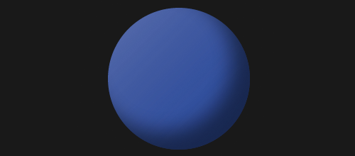
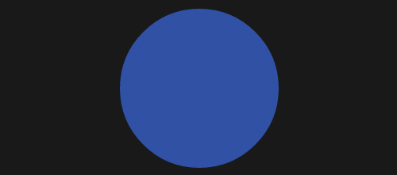
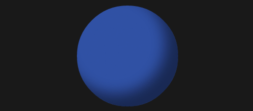

Traditionally, the web has been a static, two dimensional space. CSS allowed us to modify the width and height of elements on our websites, but it has been difficult to create a sense of depth without using lots of extra images, and creating motion has always been the realm of Flash or JavaScript. Happily, this is changing.
CSS3 provides us with a slew of new tools that allow us to do some fantastic things simply — things that would have required extra images at the least, or an entirely different language more commonly, to accomplish. And while browser support isn’t always the best for these new tools yet, sometimes it’s fun to play with what the web of tomorrow offers instead of dealing with the web of today or yesteryear.
Today, let’s start with something simple: we’ll turn a regular, blocky old element into a sphere.
The HTML
There is practically no HTML required here. We can use pretty much any tag. I chose the bold tag. B is for Ball.
The CSS
Now for the fun stuff! A bold tag is an inline element, but we can turn it into a block element easy enough. Then we can give it a width, height and color (and margin, just for spacing). That gets us our square to work with.
b.ball {
display: block;
width: 200px;
height: 200px;
margin: 30px auto 0;
background-color: #3b4ba3;
}
Next up, let’s make our square a circle. It sounds WAY harder than it is. All it takes is one line of border-radius:
border-radius: 50%;
Border-radius applies a radius to the corners of our borders, rounding them. If we set a border-radius of 50%, the corners are automatically rounded to 50% of the width/height of the element. Instant circle.

So now we have a circle, but it doesn’t look very three-dimensional. For that, we’ll turn to the realm of design, and play with light and shadow. (Note: as I’ve mentioned many times, I am NOT a designer. Take any design advice you get from me with a big grain of salt. Maybe a salt lick.)
Shadow is an easy way to create a sense of depth in a two-dimensional space. If we use an inset box-shadow (so the shadow is on our element, not behind it, we can shade our sphere.
box-shadow: inset -25px -25px 40px rgba(0,0,0,.5);
A few things to note about how I’m using the box-shadow here. The first item, inset, means the shadow is inside the element. Then I set the distance the shadow extends from the left side (-25px means it will extend 25px from the RIGHT side), the distance from the top (again, negative puts it on the bottom), and the amount of blur to add to the shadow (zero means a sharp line, bigger numbers mean more blur). Then I’m setting the color of the shadow using rgba, which allows me to use transparency in my color. I’m setting it to a 50% transparent black, which allows the blue to show through and makes the shadow look more like true shading.

Now honestly, in my opinion this is pretty close already. But we can go one step further to make it more realistic. Where there are shadows, there is light. So let’s add some light to our sphere.
Because the shadow is on the lower-right quadrant, the light must be coming from the upper-left side. I could technically use another inset drop-shadow here, but as you can see from the image above, drop shadows curve along the edge of the object. While I think that looks okay for this one shadow, adding the light in the same way starts to look strange. Instead, we’ll use a linear gradient to apply our light.
background-image: -webkit-linear-gradient(-45deg, rgba(255,255,220,.3) 0%, transparent 100%);
background-image: -moz-linear-gradient(-45deg, rgba(255,255,220,.3) 0%, transparent 100%);
background-image: -o-linear-gradient(-45deg, rgba(255,255,220,.3) 0%, transparent 100%);
background-image: -ms-linear-gradient(-45deg, rgba(255,255,220,.3) 0%, transparent 100%);
Gradients in CSS are applied as background images. I’m using browser prefixes to apply my gradient in each of the modern browsers (I’m not using the non-prefixed W3C version because Firefox seems to be misinterpreting it).
We’re using an rgba color again (30% opaque white) to create a feeling of light on that side. The -45deg part rotates the gradient from its default top-to-bottom 45 degrees counter-clockwise, so that it starts from the top-left corner. We’re fading the gradient to transparent over the length of the entire circle. We could stop the light at 50% (like it would in a real sphere), but I felt that created too hard of a line for my tastes.
And now our sphere is complete! You can see a demo below, and click through to play around with the code.
Please note, because this is a modern CSS technique, you’ll need a modern browser. Safari, Firefox, Chrome, and presumably Opera should be fine. IE9 understands the drop shadow but not the linear gradient.
Love it. I had to make it shine. :)
http://codepen.io/badcat/pen/bFfrI
Brilliant! Fantastic addition, Kel. The radial gradient is a definite improvement.
Hi Rob, yeah I left the box-shadow- I guess for “depth”, but not sure it needs it… http://codepen.io/badcat/pen/lrdhb thanks for the idea.
in the real meaning… fine, very fine…
Hi,Rob.
Welcome back to cssnewbie.:)
All your posts are awesome and much needed for a newbie like me.
Please carry on regularly.
Pingback: A Pure CSS Bouncing Ball
Pingback: A Pure CSS Bouncing Ball | Lunarium Design
Pingback: A Pure CSS Bouncing Ball | How To Web Design Easily
Pingback: A Pure CSS Bouncing Ball
Pingback: Use a CSS Preprocessor | Gallery.Clipapic
Pingback: Use a CSS Preprocessor | Lunarium Design
Pingback: Use a CSS Preprocessor
Pingback: Use a CSS Preprocessor | How To Web Design Easily
Very nice tutorial thank you
Pingback: Use a CSS Preprocessor | WarWebDev
Pingback: A New CSS Newbie Site Design Launched! | WarWebDev
Pingback: A Pure CSS Bouncing Ball | WarWebDev
Pingback: A JavaScript Currency Conversion Script | WarWebDev
Pingback: Cross-Browser Rounded Buttons with CSS3 and jQuery | WarWebDev
Pingback: Test for Border-Radius Support | WarWebDev
Pingback: Sizing Images Responsively | Gallery.Clipapic
Pingback: Sizing Images Responsively | WarWebDev
Pingback: Sizing Images Responsively | Lunarium Design